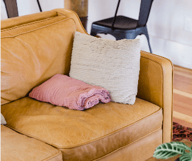
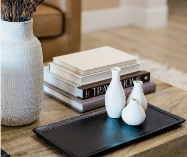
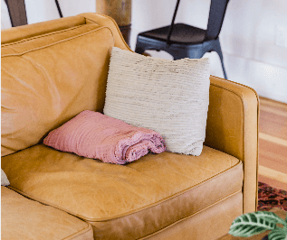
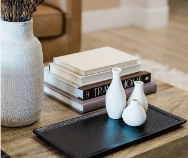

About Us

 



"Meals with my family are
always extra special
because of
the beautiful plates
I got from Custom & Nooke."
"Very pleased with
my new sofa--the quality is great,
it's comfortable, and
elevates the look of my home."
"I love how timeless my decor are.
I just need to move
around to update
the look of my space."